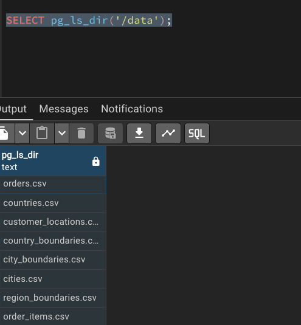

erDiagram
ORDERS {
int order_id
string customer_name
string city
string product
float price
int quantity
}
Session 08: DA with SQL | JOINs
SQL
Normalization
JOINs
Normalization
Relational databases do not start with JOINs.
They start with structure.
Normalization explains why data is split, and JOINs explain how it is recombined.
If this logic is not clear, JOINs feel like a technical burden instead of a logical necessity.
Problem
The Core Problem: Redundancy and Anomalies
Imagine storing everything in a single table.
We are saying Unnormalized Design:
| order_id | customer_name | city | product | price | quantity |
|---|---|---|---|---|---|
| 1 | Anna | Yerevan | Phone | 500 | 1 |
| 2 | Anna | Yerevan | Case | 20 | 2 |
| 3 | Arman | Gyumri | Phone | 500 | 1 |
- Customer data is duplicated
- Product prices are duplicated
- Updates are risky
- Deletes may remove important information
- Inserts may require fake or incomplete values
This structure is fragile and error-prone.
First Normal Form (1NF)
A table is in First Normal Form (1NF) if:
- Each column contains atomic values
- There are no repeating groups
- Each row is uniquely identifiable
Important
The table above already satisfies 1NF, but it is still poorly designed because multiple entities are mixed together.
Second Normal Form (2NF)
A table is in Second Normal Form (2NF) if:
- It is already in 1NF
- No non-key attribute depends on part of a composite key
To understand this, we must first identify the logical key of the original table.
In the unnormalized table, the logical key is: (order_id, product)
because:
- one order can contain multiple products
- quantity is defined per product per order
Problem
Look at the dependencies:
customer_name,citydepend only on order_id
pricedepends only on product
quantitydepends on (order_id, product)
This means we have partial dependencies.
Some columns depend on only part of the key, not the whole key.
\[\downarrow\]
This violates 2NF.
flowchart LR
K[(order_id, product)]
K --> Q[quantity]
order_id --> C[customer_name, city]
product --> P[price]
Decomposition to 2NF
To fix this, we separate data so that each table describes exactly one relationship.
Customers
| customer_id | customer_name | city |
|---|
Meaning:
- customer attributes depend only on
customer_id
Products
| product_id | product | price |
|---|
Meaning:
- product attributes depend only on
product_id
Orders
| order_id | customer_id |
|---|
Meaning:
- this table describes who placed the order
customer_iddepends entirely onorder_id
There is no composite key here, so partial dependency is impossible.
Order Items
| order_id | product_id | quantity |
|---|
Meaning:
- this table describes what was ordered
- the key is
(order_id, product_id) quantitydepends on the entire key, not just one part
erDiagram
CUSTOMERS {
int customer_id PK
string customer_name
string city
}
PRODUCTS {
int product_id PK
string product
float price
}
ORDERS {
int order_id PK
int customer_id FK
}
ORDER_ITEMS {
int order_id FK
int product_id FK
int quantity
}
CUSTOMERS ||--o{ ORDERS : places
ORDERS ||--o{ ORDER_ITEMS : contains
PRODUCTS ||--o{ ORDER_ITEMS : included_in
Why This Satisfies 2NF
After decomposition:
- Customer attributes depend only on customers:
- customer_name
- city
- Product attributes depend only on products
- product_name
- price
- Order attributes depend only on orders
- order_id
- customer_id
- Quantity depends on both order and** product**
- order_id
- product_id
- quantity
As a rusult:
- There are no partial dependencies left.
- Each non-key attribute now depends on the entire key of its table.
\[\downarrow\]
This is exactly what Second Normal Form requires.
Third Normal Form (3NF)
After reaching Second Normal Form (2NF), we removed partial dependencies.
However, another type of problem can still exist: transitive dependencies.
A table is in Third Normal Form (3NF) if:
- It is already in 2NF
- No non-key attribute depends on another non-key attribute
In other words:
Every non-key attribute must depend only on the primary key and nothing else.
Transitive Dependency
A transitive dependency occurs when:
- A non-key attribute depends on another non-key attribute
- Instead of depending directly on the primary key
Formally:
flowchart LR
customer_id --> city
city --> country
customer_id --> country
This is a transitive dependency.
Consider the Customers table after 2NF:
| customer_id | customer_name | city | country |
|---|
Let’s analyze the dependencies:
customer_id → city
city → country
\[\downarrow\]
customer_id → country indirectly
So country does not depend directly on customer_id.
It depends on city.
This violates Third Normal Form.
Problems
This structure creates anomalies:
- If a city changes its country name, multiple rows must be updated
- If the last customer from a city is
deleted, thecity–countryrelationship is lost
- If a new city is added, a customer must exist first
These are update, delete, and insert anomalies caused by transitive dependency.
Decomposition to 3NF
To remove the transitive dependency, we split the table based on real-world entities.
Cities
| city_id | city | country_id |
|---|
Meaning:
- city attributes depend only on
city_id - the relationship between city and country is stored once
Countries
| country_id | country |
|---|
country attributes depend only on
country_id
Customers
| customer_id | customer_name | city_id |
|---|
- customer attributes depend only on
customer_id- city information is referenced, not duplicated
erDiagram
CUSTOMERS {
int customer_id PK
string customer_name
int city_id FK
}
CITIES {
int city_id PK
string city
int country_id FK
}
COUNTRIES {
int country_id PK
string country
}
CUSTOMERS ||--|| CITIES : lives_in
CITIES ||--|| COUNTRIES : belongs_to
Why This Satisfies 3NF
After decomposition:
customer_namedepends only oncustomer_id
city_iddepends only oncustomer_id
countrydepends only oncountry_id
- There are no indirect dependencies
Each table now represents one concept and one level of dependency.
Normalization Summary
- First Normal Form removing duplicate rows
- Second Normal Form removes partial dependencies.
- Third Normal Form removes transitive dependencies.
At this point:
- Data redundancy is minimized
- Anomalies are eliminated
- Relationships are explicit
flowchart TB
A[Unnormalized] --> B[1NF<br/>Atomic Values]
B --> C[2NF<br/>No Partial Dependencies]
C --> D[3NF<br/>No Transitive Dependencies]
TipAfter 3NF…
3NF commonly considered sufficient in practice for many transactional systems.
- Boyce-Codd Normal Form (BCNF) BCNF is a stricter refinement of 3NF A table:
- For every functional dependency (X → Y), X must be a superkey (a unique identifier for the table).
- This eliminates certain anomalies that can still exist in 3NF designs.
- Fourth Normal Form (4NF): Removes multi-valued dependencies (if the table is already in BCNF).
- Fifth Normal Form (5NF): Eliminates join dependencies beyond 4NF.
- Sixth Normal Form (6NF) and others exist mostly for theoretical completeness.
For more information you can visit here
New Analytical Schema
This schema is intentionally designed to support:
INNER/LEFT/RIGHT/FULL OUTERjoins
SELFjoins
SPATIALjoins
- Window functions
- Subqueries
- CTEs
- Creating a schema and tables
- Populate data using CSV-based loading
Docker Update
As usal, we are starting from starting our docker containers:
- the database
- pgadmin (viewer)
Step 1: Stop and clean existing containers
We first stop the containers and remove volumes (-v ensures that old database data is removed).
docker compose down -vStep 2: Update the Docker image
In docker-compose.yaml, update the database service:
Before
image: postgres:17After
image: postgis/postgis:17-3.4Add also a new volume
- ./data/analytics_schema:/data:ro
This image includes:
- PostgreSQL 17
- PostGIS 3.4
- All required spatial libraries
Step 3: Remove persisted data folders
To ensure a clean initialization, delete the following folders if they exist:
postgres_data/
pgadmin_data/
These folders store old volumes and may conflict with the new image.
Step 4: Start containers again
First start normally and verify everything works:
docker compose upOnce confirmed, stop and restart in detached mode:
docker compose up -dAdd PostGIS Extention
Once the PostGIS-enabled container is running, we enable the extension inside the database.
CREATE EXTENSION IF NOT EXISTS postgis;To verify that PostGIS is installed correctly:
SELECT PostGIS_Version();The above code should provide a table with postgis_version: 3.4 USE_GEOS=1 USE_PROJ=1 USE_STATS=1
If this returns a version string, PostGIS is ready.
Creating New Schema
We do not use the default public schema for analytics.
Instead, we create a dedicated schema called analytics.
if you right click on the schemas
CREATE SCHEMA IF NOT EXISTS analytics;
CautionSET search_path TO analytics
PostgreSQL databases can contain multiple schemas.
When you write:
SELECT * FROM customers;PostgreSQL must decide which schema to search for the customers table.
By default, it searches the public schema.
By running: SET search_path TO analytics; we tell PostgreSQL:
“Look in the
analyticsschema first when resolving table names.”
SELECT
*
FROM orders o
JOIN customers c ON o.customer_id = c.customer_id;instead of:
SELECT
*
FROM analytics.orders o
JOIN analytics.customers c ON o.customer_id = c.customer_id;Sync with GitHub
Remember to push the changes into GitHub: 1. git add docker-compose.yam 2. git commit -m "adding postgis extention" 3. git push
Creating Geographical Tables
Now we define the analytical data model that will be used throughout this module.
The schema follows a normalized (3NF) design with a clear geographic hierarchy:
Country → Region → City → Customer
You can check the newly created
analyticsschema, and refresh it after each new table creation.
Countires
This table represents sovereign countries and serves as the top-level geographic entity.
CREATE TABLE analytics.countries (
country_id INT PRIMARY KEY,
country_name TEXT NOT NULL
);Regions
CREATE TABLE analytics.regions (
region_id INT PRIMARY KEY,
region_name TEXT NOT NULL,
country_id INT NOT NULL REFERENCES analytics.countries(country_id)
);Cities
CREATE TABLE analytics.cities (
city_id INT PRIMARY KEY,
city_name TEXT NOT NULL,
region_id INT NOT NULL REFERENCES analytics.regions(region_id)
);Creating Non Geographical Tables
Customers
CREATE TABLE analytics.customers (
customer_id INT PRIMARY KEY,
first_name TEXT NOT NULL,
last_name TEXT NOT NULL,
age INT CHECK (age BETWEEN 16 AND 100),
email TEXT UNIQUE,
city_id INT REFERENCES analytics.cities(city_id),
signup_date DATE NOT NULL
);Products
CREATE TABLE analytics.products (
product_id INT PRIMARY KEY,
product_name TEXT NOT NULL,
category TEXT NOT NULL,
price NUMERIC(10,2) NOT NULL
);Orders
CREATE TABLE analytics.orders (
order_id INT PRIMARY KEY,
customer_id INT REFERENCES analytics.customers(customer_id),
order_date DATE NOT NULL,
status TEXT NOT NULL
);Order Items
CREATE TABLE analytics.order_items (
order_item_id INT PRIMARY KEY,
order_id INT NOT NULL REFERENCES analytics.orders(order_id),
product_id INT NOT NULL REFERENCES analytics.products(product_id),
quantity INT NOT NULL CHECK (quantity > 0)
);Country Boundaries
These tables extend the relational model with geometries, enabling spatial joins.
CREATE TABLE analytics.country_boundaries (
country_id INT PRIMARY KEY REFERENCES analytics.countries(country_id),
geom GEOMETRY(MultiPolygon, 4326)
);Region Boundaries
CREATE TABLE analytics.region_boundaries (
region_id INT PRIMARY KEY REFERENCES analytics.regions(region_id),
geom GEOMETRY(Polygon, 4326)
);City Boundaries
CREATE TABLE analytics.city_boundaries (
city_id INT PRIMARY KEY REFERENCES analytics.cities(city_id),
geom GEOMETRY(Polygon, 4326)
);Customer Locations
CREATE TABLE analytics.customer_locations (
customer_id INT PRIMARY KEY REFERENCES analytics.customers(customer_id),
geom GEOMETRY(Point, 4326)
);Design Summary
At this stage, the database contains:
- A fully qualified
analyticsschema
- Normalized relational tables (3NF)
- Hierarchical geographic dimensions
- Fact tables for analytical workloads
- Spatial tables for PostGIS joins
Check out the this repository on my side
ERD
In order to generate and check the ERD you need to:
- right click on
analytisc schema - select ERD
- you must see below image

Important
In case you are encountering an error please do the following
function postgis_typmod_type(integer) does not exist
LINE 1: SELECT postgis_typmod_type(i) FROM
^
HINT: No function matches the given name and argument types. You might need to add explicit type casts.DROP EXTENSION IF EXISTS postgis CASCADE;
-- SET search_path TO public;
CREATE EXTENSION postgis;
SELECT PostGIS_Version();It should return: postgis_version: 3.4 USE_GEOS=1 USE_PROJ=1 USE_STATS=1
Sync with GitHub
Save the quiries in proper file similar this repository and push do GitHub.
Populating the Data
In your folder now you need to have the following structure
data/
├── public_schema/
│ └── ... # existing dummy data (unchanged)
└── analytics_schema/
├── countries.csv
├── regions.csv
├── cities.csv
├── customers.csv
├── products.csv
├── orders.csv
├── order_items.csv
├── country_boundaries.csv
├── region_boundaries.csv
├── city_boundaries.csv
└── customer_locations.csvChecking
try this:
SELECT pg_ls_dir('/data');
analytics.countries
COPY analytics.countries
FROM '/data/countries.csv'
CSV HEADER;
SELECT * FROM analytics.countries;analytics.regions
COPY analytics.regions
FROM '/data/regions.csv'
CSV HEADER;
SELECT * FROM analytics.regions;analytics.cities
COPY analytics.cities
FROM '/data/cities.csv'
CSV HEADER;
SELECT * FROM analytics.cities;analytics.customers
COPY analytics.customers
FROM '/data/customers.csv'
CSV HEADER;
SELECT * FROM analytics.customers LIMIT 10;analytics.products
COPY analytics.products
FROM '/data/products.csv'
CSV HEADER;
SELECT * FROM analytics.products;analytics.orders
COPY analytics.orders
FROM '/data/orders.csv'
CSV HEADER;
SELECT * FROM analytics.orders LIMIT 10;analytics.order_items
COPY analytics.order_items
FROM '/data/order_items.csv'
CSV HEADER;
SELECT * FROM analytics.order_items LIMIT 10;Boundarie Tables
Here we need to do something important transformation, by creating temporary tables
Creating Staging Tables
CREATE TABLE IF NOT EXISTS analytics._stg_country_boundaries (
country_id INT,
wkt TEXT
);
CREATE TABLE IF NOT EXISTS analytics._stg_region_boundaries (
region_id INT,
wkt TEXT
);
CREATE TABLE IF NOT EXISTS analytics._stg_city_boundaries (
city_id INT,
wkt TEXT
);
CREATE TABLE IF NOT EXISTS analytics._stg_points (
point_id INT,
wkt TEXT
);COPY CSVs into staging tables
COPY analytics._stg_country_boundaries
FROM '/data/country_boundaries.csv'
CSV HEADER;
SELECT * FROM analytics._stg_country_boundaries;
COPY analytics._stg_region_boundaries
FROM '/data/region_boundaries.csv'
CSV HEADER;
SELECT * FROM analytics._stg_region_boundaries;
COPY analytics._stg_city_boundaries
FROM '/data/city_boundaries.csv'
CSV HEADER;
SELECT * FROM analytics._stg_city_boundaries;
COPY analytics._stg_points
FROM '/data/customer_locations.csv'
CSV HEADER;
SELECT * FROM analytics._stg_points;analytics.country_boundaries
INSERT INTO analytics.country_boundaries (country_id, geom)
SELECT
country_id,
ST_GeomFromText(wkt, 4326)
FROM analytics._stg_country_boundaries;analytics.region_boundaries
INSERT INTO analytics.region_boundaries (region_id, geom)
SELECT
region_id,
ST_GeomFromText(wkt, 4326)
FROM analytics._stg_region_boundaries;
analytics.city_boundaries
INSERT INTO analytics.city_boundaries (city_id, geom)
SELECT
city_id,
ST_GeomFromText(wkt, 4326)
FROM analytics._stg_city_boundaries;analytics.customer_locations
INSERT INTO analytics.customer_locations (customer_id, geom)
SELECT
point_id,
ST_GeomFromText(wkt, 4326)
FROM analytics._stg_points;Geometry checks
SELECT
COUNT(*) FILTER (WHERE ST_IsValid(geom)) AS valid_geom,
COUNT(*) AS total
FROM analytics.country_boundaries;SELECT
ST_GeometryType(geom),
COUNT(*)
FROM analytics.country_boundaries
GROUP BY 1;Geometry Validation
SELECT
COUNT(*) FILTER (WHERE ST_IsValid(geom)) AS valid_geometries,
COUNT(*) AS total_geometries
FROM analytics.city_boundaries;SELECT
COUNT(*) FILTER (WHERE ST_SRID(geom) = 4326) AS correct_srid,
COUNT(*) AS total_geometries
FROM analytics.city_boundaries;Table JOINs

INNER JOIN | Only Matching Rows
Question: Which customers have placed orders?
Only rows where customers.customer_id = orders.customer_id are kept.
SELECT
c.customer_id,
c.first_name,
o.order_id,
o.order_date
FROM analytics.customers c
INNER JOIN analytics.orders o
ON c.customer_id = o.customer_id;- Customers without orders are excluded
- Orders without customers are excluded
LEFT JOIN | Preserve the Base Table
Question: Show all customers, even if they never ordered.
flowchart LR C[customers] -->|customer_id| O[orders] C --> R[Result] O --> R
All customers are preserved.
Orders are optional.
SELECT
c.customer_id,
c.first_name,
o.order_id
FROM analytics.customers c
LEFT JOIN analytics.orders o
ON c.customer_id = o.customer_id;- Customers without orders appear with
NULLvalues - Base table =
customers
LEFT JOIN + NULL FILTER | Anti-Join Pattern
Question: Which customers have never ordered?
flowchart LR C[customers] -->|customer_id| O[orders] O -. no match .-> N[NULL]
SELECT
c.customer_id,
c.first_name
FROM analytics.customers c
LEFT JOIN analytics.orders o
ON c.customer_id = o.customer_id
WHERE o.order_id IS NULL;- Very common interview and analytics pattern
- Identifies absence of relationships
One-to-Many JOIN | Orders to Order Items
Question: What products were sold in each order?
flowchart LR
O[orders] -->|order_id| OI[order_items] -->|product_id| P[products]SELECT
o.order_id,
p.product_name,
oi.quantity
FROM analytics.orders o
JOIN analytics.order_items oi
ON o.order_id = oi.order_id
JOIN analytics.products p
ON oi.product_id = p.product_id;- One order → many order items
- Rows multiply by design
Aggregation After JOIN | Controlling Row Explosion
Question: Total revenue per order.
flowchart LR O[orders] --> OI[order_items] --> P[products] P --> SUM[Sum of quantity times price]
SELECT
o.order_id,
SUM(oi.quantity * p.price) AS order_revenue
FROM analytics.orders o
JOIN analytics.order_items oi
ON o.order_id = oi.order_id
JOIN analytics.products p
ON oi.product_id = p.product_id
GROUP BY o.order_id;- Aggregation collapses multiplied rows
- Critical in analytical SQL
Hierarchical JOIN | Customer Geography
Question: Where is each customer located?
flowchart LR CO[countries] --> R[regions] --> CI[cities] --> C[customers]
SELECT
c.customer_id,
ci.city_name,
r.region_name,
co.country_name
FROM analytics.customers c
JOIN analytics.cities ci
ON c.city_id = ci.city_id
JOIN analytics.regions r
ON ci.region_id = r.region_id
JOIN analytics.countries co
ON r.country_id = co.country_id;- Dimension-style hierarchy
- Common in BI models
Spatial JOIN | Geometry Meets Business Data
Question: Is a customer physically inside their declared city?
flowchart LR CL[customer_locations] -->|ST_Within| CB[city_boundaries]
SELECT
c.customer_id,
ci.city_name,
ST_Within(cl.geom, cb.geom) AS inside_city
FROM analytics.customers c
JOIN analytics.customer_locations cl
ON c.customer_id = cl.customer_id
JOIN analytics.cities ci
ON c.city_id = ci.city_id
JOIN analytics.city_boundaries cb
ON ci.city_id = cb.city_id;- Combines relational joins with spatial predicates
- Typical PostGIS analytical pattern
Tip
More reading for postgis functionality
Many-to-Many Effect | Why Row Counts Explode
flowchart LR
O[orders] --> OI[order_items]
OI --> P[products]SELECT COUNT(*) AS joined_rows
FROM analytics.orders o
JOIN analytics.order_items oi
ON o.order_id = oi.order_id;- Each order may contain multiple products
- Each product may appear in many orders
- Analysts must expect multiplication
Final SQL Project | Kickoff
Project Goal
Design and deliver a production-grade analytical SQL project that demonstrates:
- Proper normalization
- Relational and spatial modeling
- Analytical querying
- Documentation and reproducibility
This project simulates a real analytics workflow, from raw data to insights.
Step 1 | Select a Business Domain
Choose one primary business table that genuinely interests your team.
Examples:
- Customer transactions
- Product sales
- Service usage events
- Location-based activity
Mandatory requirement:
- The domain must include geography
- Geography can be:
- Customer locations
- Service areas
- Store regions
- Delivery zones
If unsure, propose your domain and validate it before proceeding.
Step 2 | Normalize the Data Model
Start from a single wide table (conceptual or real).
Example (not final):
- customer_name
- product_name
- city
- region
- country
- order_date
- price
Normalize into logical entities:
- Countries
- Regions
- Cities
- Customers
- Events / Orders / Activities
- Products (if applicable)
- Spatial boundaries
Rules:
- Remove redundancy
- Use surrogate or natural keys consistently
- Enforce referential integrity
Step 3 | Create a New Database and Schema
Create a dedicated database for the project.
CREATE DATABASE final_sql_project; -- any meaningful name which goes according to your projectCreate a dedicated schema.
CREATE SCHEMA analytics;
SET search_path TO analytics;- All tables must live under this schema
- Never use
public
Step 4 | Create Tables (DDL)
Define all tables explicitly:
- Primary keys
- Foreign keys
- Constraints
- Geometry types with SRID
CREATE TABLE analytics.example_table (
id INT PRIMARY KEY,
geom GEOMETRY(Point, 4326)
);- Spatial tables are mandatory
- Use PostGIS correctly
Step 5 | Populate the Database
Populate tables using CSV-based loading.
- Use
COPYor staging tables - Data volume should be realistic: more that 10k rows
COPY analytics.table_name
FROM '/data/table_name.csv'
CSV HEADER;- Validate row counts
- Validate referential integrity
- Validate geometries using
ST_IsValid
Step 6 | Create the ERD
Produce an Entity Relationship Diagram that shows:
- Tables
- Primary keys
- Foreign keys
- Cardinality
Step 7 | Push the changes into GitHub
Create a dedicated GitHub repository.
Repository structure example:
/queries/init/data/erd/docsREADME.mddocker-comose.yaml.env
Push:
- DDL scripts
- CSV files (or generation scripts)
- ERD
- Documentation
Warning
Commit early and often.
Step 8 | Define Analytical Questions
Before writing complex SQL, define business questions.
Examples:
- Revenue by country / region / city
- Customer distribution by geography
- Top products per region
- Customers outside expected boundaries
- Growth trends over time
Each question should map to specific joins.
Step 9 | Construct a Denormalized Analytical Table
Create a flattened analytical table.
- Join all necessary dimensions
- One row per analytical grain (e.g., order, customer-day)
CREATE TABLE analytics.fact_orders AS
SELECT
o.order_id,
o.order_date,
c.customer_id,
ci.city_name,
r.region_name,
co.country_name,
SUM(oi.quantity * p.price) AS revenue
FROM analytics.orders o
JOIN analytics.customers c ON o.customer_id = c.customer_id
JOIN analytics.cities ci ON c.city_id = ci.city_id
JOIN analytics.regions r ON ci.region_id = r.region_id
JOIN analytics.countries co ON r.country_id = co.country_id
JOIN analytics.order_items oi ON o.order_id = oi.order_id
JOIN analytics.products p ON oi.product_id = p.product_id
GROUP BY
o.order_id, o.order_date,
c.customer_id, ci.city_name,
r.region_name, co.country_name;- This table will be reused later for:
- Subqueries
- Window functions
- Advanced analytics
Step 10 | Visualization
Use any tool: SQL client charts is recommended
Focus on:
- Geography-based insights
- Trends
- Comparisons
Step 11 | Create a Data Dictionary
Document every table and column.
Example:
- Table name
- Column name
- Data type
- Description
- Constraints
Store as: Markdown (.md)
This is a professional requirement, not optional.
Step 12 | Final Review and Presentation
Deliverables:
- SQL database
- ERD
- GitHub repository
- Analytical tables
- Answered business questions
- Visuals
- Data dictionary
Final step:
- Present:
- Design decisions
- Normalization logic
- Join strategy
- Analytical findings
Evaluation Focus
- Correct normalization
- Correct joins
- Proper use of geography
- Clean SQL
- Reproducibility
- Analytical thinking
This project simulates real-world analytics work.